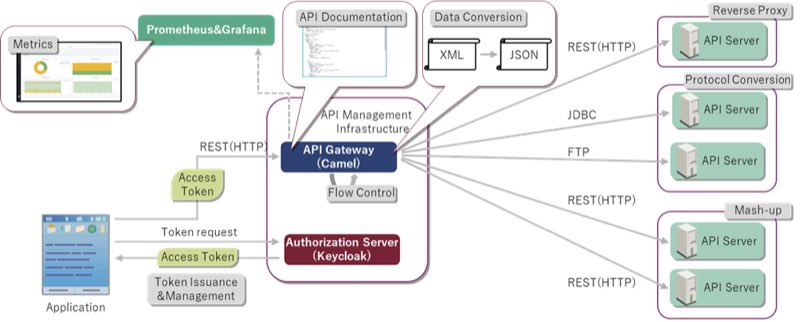
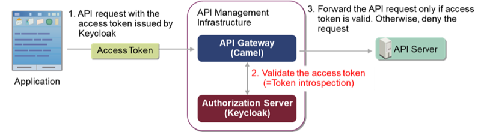
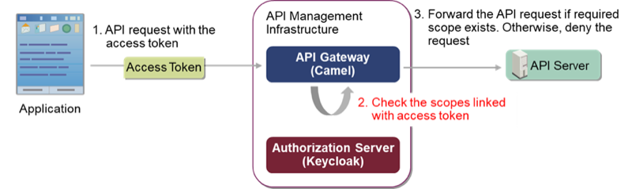
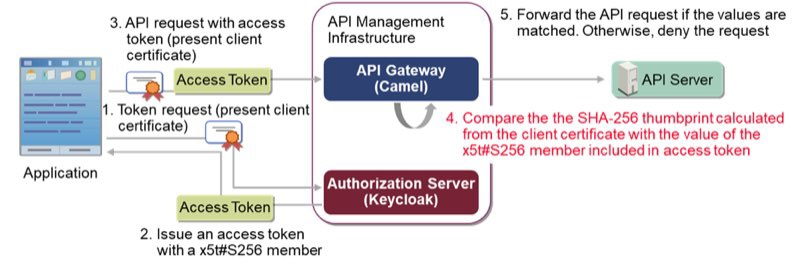

I’m an engineer working at the OSS solution center of Hitachi, Ltd. Hitachi, Ltd. is a company that provides IT services & platforms in Japan and other countries. In our organization, OSS solution center, we are working on providing the IT services with the OSS. In my case, I’m working on Keycloak, 3scale and Camel, providing the technical support and considering the use cases of them. And I’m also an open source contributor for Keycloak.
API management infrastructure
When being used as an API Gateway, Apache Camel (hereinafter called “Camel”) can use its various functions like protocol conversion and mash-up to support complex requirements flexibly. By adding Keycloak as an OAuth 2.0 authorization server, we can obtain an API management infrastructure which can also perform API authentication.
What is Keycloak?
Keycloak is an identity and access management OSS. As an OAuth 2.0 authorization server, Keycloak supports OAuth 2.0 and a part of related standards, that will play a big role in a later chapter.
Architecture Overview
As shown in the picture below, the API management infrastructure can perform reverse proxy, protocol conversion, data conversion, mash-up, flow control, API documentation publishing and metrics. Besides, it also can perform simple API authorization by token issuance & management that is provided by Keycloak.
{kind=link}

Drawbacks of security
Although the existing API management infrastructure has taken a security measure as token issuance & management, there are also three drawbacks of its security:
- Inadequate token validation.
- No API access management for each API.
- No prevention for token stealing.
All drawbacks will cause API abuse. I’ll explain them in detail in the following.
Drawback 1: Inadequate token validation
The existing API management infrastructure only does minimal validations such as checking signature and expiration time after receiving an access token. Because an access token can be invalidated before its expiration time (as an “inactive” access token), only doing the minimal validations may incorrectly determine an inactive access token as valid. Attackers can use such inactive access tokens to access the API.
Drawback2: No access management for each API
The existing API management infrastructure have no access management for each API. As a result, anyone can access an arbitrary API with full authority. It will lead to many security issues, as well as a large risk for data breaches.
Drawback3: No prevention for token stealing
The existing API management infrastructure have no prevention for access token stealing. Attackers can use a stolen access token to access the API.
Security enhancement with Keycloak
For overcoming the security drawbacks, we can use three mechanisms defined in OAuth 2.0 and its related standards. They’re token introspection, scope check and OAuth MTLS. All of them are supported by Keycloak. I’ll explain them in detail in the following, and show you how to implement them by developing Camel applications with the support of Keycloak.
Token introspection
{kind=link}

Token introspection is a mechanism for validating access token by requesting an authorization server. It is defined in RFC7662, a related standard of OAuth 2.0.
In token introspection, API gateway sends an introspection request that includes the access token to validate to the authorization server. Introspection request uses POST method and “application/x-www-form-urlencoded” content type, and includes the access token in the request body as a parameter called token.
The following is an example introspection request.
POST /introspect HTTP/1.1
Host: server.example.com
Accept: application/json
Content-Type: application/x-www-form-urlencoded
token=2YotnFZFEjr1zCsicMWpAA
Usually, the introspection response includes a set of information about the access token if it is active.
{
"active": true,
"client_id": "l238j323ds-23ij4",
"username": "jdoe",
"scope": "read write dolphin",
"sub": "Z5O3upPC88QrAjx00dis",
"aud": "https://protected.example.net/resource",
"iss": "https://server.example.com/",
"exp": 1419356238,
"iat": 1419350238,
"extension_field": "twenty-seven"
}
If the access token is not active, the following response is returned instead.
{
"active": false
}
Support in Keycloak
For supporting token introspection, Keycloak provides an introspection endpoint to receive the introspection request.
After receiving the introspection request, Keycloak inspects the access token with several steps including validate the session linked with the access token.
Session is a data structure used in Keycloak for storing user’s login information. Access token is generated from session and every access token is linked with one session. Access token and the linked session have the same value of their validities. Therefore, if the linked session is validated to invalid, the access token also will be validated to invalid even if its expiration time hasn’t been reached.
Development in Camel
API management infrastructure can use token introspection to confirm whether an access token is active.
To add the function of token introspection to API management infrastructure, we can develop it in Camel by using HTTP4 component. In this case, HTTP4 component will be used for sending the introspection request and receiving the introspection response.
the following is an sample that shows how to implement token inspection in Camel.
from(...) //receive the API request from the client application
.setHeader(...) //set the headers for requesting the inspection endpoint
.setBody(simple("client_id=...&client_secret=...&token=...") //set the client authentication information and the access token
.to("http4://.../introspect") //send the inspection request to the inspection endpoint of Keycloak
.choice() //check the response of token inspection
.when(...) //if access token was active
.setHeader(...) //set the headers for requesting the backend
.recipientList(...); //request the backend
.otherwise() //if access token was inactive
.setHeader(...) //set the error status code to 401
.setBody(...); //set the error response content
Effect
As a result of implementing token introspection, the API request with an inactive access token will be denied by security enhanced API management infrastructure (with a 401 response). It means the drawback 1 is overcome.
Scope check
{kind=link}

Scope is a mechanism for limiting an application’s access to an API. It is defined in RFC6749, the specification document of OAuth 2.0.
After receiving the token request with the scopes specified in query parameters, authorization server issues an access token with a scope member. The value of the scope member is a list of space-delimited strings (the scopes granted to the access token).
The following is an example access token with a scope member.
{
"iss": "https://example.hitachi.com/",
"aud": "https://app1.hitachi.com/",
"sub": "jdoe",
"scope": "read write dolphin",
"iat": 1458785796,
"exp": 1458872196
}
Support in Keycloak
When issuing an access token, Keycloak confirms which scopes have been granted to the client application, and writes the scopes into the access token.
Development
API management infrastructure can check the scopes included in access token to confirm whether the client application is allowed to access the requested API. If the required scope is not included, the API request will be denied.
To add the function of scope check to API management infrastructure, we can develop it in Camel by using a processor. Processor is used for treating the message that flowing in Camel. Camel provides many kinds of default processors. And Camel also provides a processor interface for the developers to customize their own processors. In this case, we choose to use a customized processor, that is more suitable to our needs.
the following is an sample that shows how to implement scope check in Camel.
from(...) //receive the API request from the client application
.process(ScopeCheckProcessor.class) //check the required scopes
.choice() //check the result of the processor
.when(...) //if the required scopes was exist
.setHeader(...) //set the headers for requesting the backend
.recipientList(...); //request the backend
.otherwise()//if the required scopes was not exist
.setHeader(...) //set the error status code to 403
.setBody(...); //set the error response content
Effect
As a result of implementing scope check, the API request without granted authority (scope) will be denied by security enhanced API management infrastructure (with a 403 response). It means that the drawback 2 is overcome.
OAuth MTLS
{kind=link}

OAuth MTLS is a mechanism for preventing token stealing attacks by using the client certificate of the client application. It is defined in RFC8705, a related standard of OAuth 2.0.
In OAuth MTLS, all the communication must use MTLS (Mutual TLS). It means that the communication from the client side also should present its certificate. As a result, the client certificate will be passed to the server side.
The access token used in OAuth MTLS should present the client certificate of the client application using a cnf.x5t#S256 member. The value of the cnf.x5t#S256 member is the the SHA-256 thumbprint of the client certificate.
The following is an example access token that has a cnf.x5t#S256 member.
{
"iss": "https://example.hitachi.com",
"aud": "https://app1.hitachi.com"
"sub": "jdoe",
"iat": 1458785796,
"exp": 1458872196,
"cnf":{
"x5t#S256": "bwcK0esc3ACC3DB2Y5_lESsXE8o9ltc05O89jdN-dg2"
}
}
Support in Keycloak
After enabling the OAuth MTLS, when issuing an access token, Keycloak calculates the SHA-256 thumbprint of the client certificate, and writes the result into the cnf.x5t#S256 member.
Development
After receiving an API request with the client certificate, API manager infrastructure can compare the SHA-256 thumbprint of the client certificate and the value of the cnf.x5t#S256 member in the access token. If they are not matched, the API request will be denied.
To add the function of OAuth MTLS to API management infrastructure, we can develop it in Camel by using a customized processor.
The following is an sample that shows how to implement OAuth MTLS in Camel.
from(...) //receive the API request from the client application
.process(CertificateBindingProcessor.class) //compare the SHA-256 thumbprint of the client certificate and the cnf.x5t#S256 member of the access token
.choice() //check the result of the processor
.when(...) //if the the SHA-256 thumbprint and the cnf.x5t#S256 member was matched
.setHeader(...) //set the headers for requesting the backend
.recipientList(...); //request the backend
.otherwise()//if the the SHA-256 thumbprint and the cnf.x5t#S256 member was not matched
.setHeader(...) //set the error status code to 403
.setBody(...); //set the error response content
Effect
As a result of implementing OAuth MTLS, if an API request is from a client application that is not the one which the access token is issued for, the API request will be denied by security enhanced API management infrastructure (with a 403 response). It means that a stolen access token can’t be used, so that the drawback 3 is overcome.